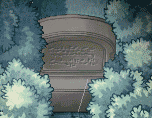

| 概要 | 情報 | アイテム一覧 |
| 敵キャラ一覧 | ステージ一覧 | 夢幻迷宮について |
| 攻略チャート | Zwei!! 攻略へ |
| ステージ選択へ |
カヤパの森 Lv.4
A |
A地点には2つのボタンスイッチがあります。 左をONにすると、左の扉が、右をONにすると右の扉が開きます。 両方をONにすると上の扉が開きます。 |
B |
このくいが対岸にあればフックロープで移動できます。 |
C |
Cには4つのレバースイッチがあります。 全てを赤にすると下の扉が開き、全てを緑にすると左の扉が開きます。 |
| D  |
D地点には写真の左の墓石があります。通常攻撃で破壊可能です。 また、Dの下の空間には分かりづらい位置にツボがあります。 |
|||||||||
| E | E地点ではトゲが高速で移動しています。ぶつからないように注意しましょう。 | |||||||||
F
|
F地点は全てを赤にすると右の扉が開き、全てを緑にすると左の扉が開きます。 赤にするには写真”!”が付いているスイッチを動かします。 緑にするには、表を参考にしてください。 |
|||||||||
| ステージ選択へ |
| 概要 | 情報 | アイテム一覧 |
| 敵キャラ一覧 | ステージ一覧 | 夢幻迷宮について |
| 攻略チャート | Zwei!! 攻略へ |
Zwei!!
| 目次へ戻る | ページの上部へ |